Company_XXX is an online company that meets the growing demand for independent travel information. it offers an extensive hotel meta search to travellers.
Company_XXX hosts different case studies on their website, that job applicants can work on.
Task: The task consists of user visit data, stored as a csv. First, we would like you to perform some descriptive analysis of the data at hand. What can you tell us about the visits that are included? Imagine that you want to understand our product and think about what would be important for you. Explore the data, get a feel for how it is structured and show us what you can do. Some topics you may want to look into are:
What is good for the product, what is bad? + Anomalies in data + Inferences from the data
Secondly define three KPI’s for the performance of the product and show how they are calculated. Describe what you see and try to think about why these developments might be happening. Define plausible reasons for any changes you might observe in the data.
## Install the libraries required
## create a vector of packages to be installed
pkgs <- c("tidyverse","data.table","DT","lubridate","ggthemes")
## Check if there are packages you want to load, that are not already installed.
miss_pkgs <- pkgs[!pkgs %in% installed.packages()[,1]]
## Installing the missing packages
if(length(miss_pkgs)>0){
install.packages(miss_pkgs)
}
## Loading all the packages
invisible(lapply(pkgs,library,character.only=TRUE))
## Remove the objects that are no longer required
rm(miss_pkgs)
rm(pkgs)### Setting the plot theme
Company_XXX_theme<- theme_hc()+ theme(legend.position = "right",
legend.direction = "vertical",
#legend.title = element_blank(),
plot.title = element_text( size = rel(1.6), hjust = 0.5),
plot.subtitle = element_text(size = rel(1.5), hjust = 0.5),
#axis.text = element_text( size = rel(1.5)),
axis.text.x = element_text(size =rel(1.5),angle = 0),
axis.text.y = element_text(size =rel(1.5),angle = 0),
axis.title = element_text( size = rel(1.55)),
axis.line.x = element_line(size = 1.5, colour = "#c94a38"),
panel.background = element_rect(fill = NA))
### Colours that will be used for the plots
Company_XXX_blue = "#007faf"
Company_XXX_orange = "#c94a38"
Company_XXX_yellow = "#f48f00"
## Avoidance of scientific numbers
options(scipen = 999)
## Printing function
pr_func<-function(data,cnames){
datatable(data,colnames = cnames,
extensions = 'Buttons', options = list(
dom = 'Bfrtip',
buttons = c('copy', 'print')
)
)
}
## Read in the datasets
page_log <- read_csv("../../../../../PersonalDevelopment/page_log.csv")
visit_caseStudy <- read_delim("../../../../../PersonalDevelopment/visit_caseStudy.csv",";", escape_double = FALSE, trim_ws = TRUE)The first part of the challenge involved analysis of user visit data.
The data provided is only one day’s worth, as is shown by the minimum timestamp, i.e 2018-06-13 and maximum timestamp, i.e 2018-06-13 23:59:59
The data contains 142599 unique participants, and a total of 156638 unique sessions, meaning on average 1.1 sessions per user.
The analysis sought to answer the following questions:
On average, how many times did users visit the website?
Of those who visited the website only once, how many made successive bookings?
Of those who visited the website more than once, what was the rate of successful bookings?
Where are most of the website users based?
Is there a trend in website visit times? Do users prefer visiting the website in the morning, afternoon or evening?
Generally, what is the length of time between the booking date and start of travel date?
What is the distribution of advertisers
Which advertiser results into a majority of booking errors?
For those who only visit the website once and never succeed in booking, how far along is the travel date from the booking date? Is it that they do not log in again because the trip is not that urgent?
For those who visited the website more than once, what is the average length of time between the first visit and second visit?
For those who re-visit the website within one hour, after how many minutes do they do so?
For those who visited the website more than once and were not successful in making a booking in the first instance, after how many trials (sessions) were they successful?
From the plot given below, a majority of the users (94%) visited the website only once. I would be keen to find out whether they made successive bookings.
Note: The graph has been truncated to only display information for those who visited the website less than 7 times
## Table
summ_tab <- visit_caseStudy %>%
distinct(tracking_id, session_id) %>%
group_by(tracking_id) %>%
summarise(frequency = n()) %>%
ungroup() %>%
group_by(frequency) %>%
summarise(count = n()) %>%
mutate(perc = round((count/sum(count))*100,0))
## Print the table
pr_func(summ_tab,cnames = c("Number of Log-Ins","Frequency","Percentage") )
## Graph
summ_graph <- ggplot(summ_tab%>% filter(frequency <6), aes(x=frequency,y=count))+
geom_bar(stat = "identity", fill=Company_XXX_yellow)+
geom_text(aes(label =count),vjust = -0.25, size = 5)+
Company_XXX_theme+
labs(title = "Distribution of Website Visits",x="Number of Log-Ins",
y="Frequency")
summ_graph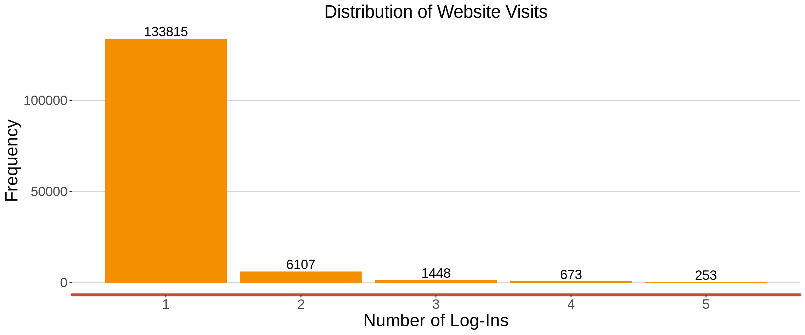
A majority (98%) of those who only visited the website once did not succeed in making a booking.
## Table
summ_tab <- visit_caseStudy %>%
distinct(tracking_id, session_id,.keep_all = TRUE) %>%
group_by(tracking_id) %>%
mutate(frequency = n()) %>%
filter(frequency==1) %>%
ungroup() %>%
mutate(bookingOk = ifelse(bookingOk==0,"No","Yes")) %>%
group_by(bookingOk) %>%
summarise(count = n()) %>%
mutate(perc = round((count/sum(count))*100,0))
## Print the table
pr_func(summ_tab,cnames = c("Ok Booking","Frequency","Percentage") )
## Graph
summ_graph <- ggplot(summ_tab, aes(x=bookingOk,y=count,fill=bookingOk))+
geom_bar(stat = "identity")+
geom_text(aes(label =count),vjust = -0.25, size = 5)+
Company_XXX_theme+
scale_fill_manual(values = c(Company_XXX_yellow, Company_XXX_blue))+
labs(title = "Distribution of Successive Bookings",x="",
y="Frequency")
summ_graph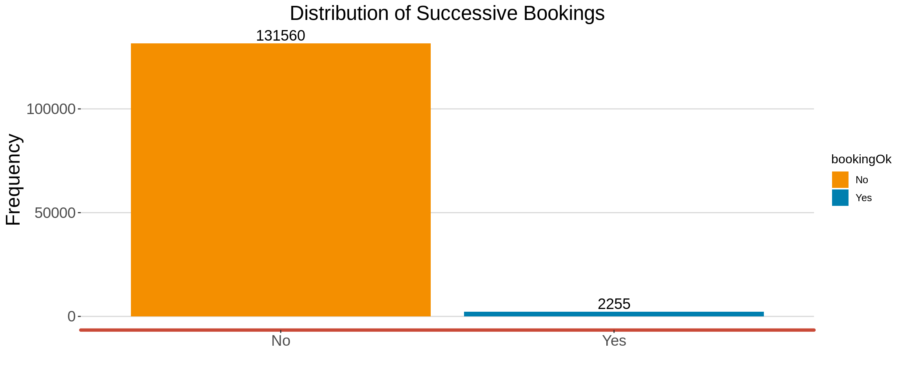
summ_tab <- visit_caseStudy %>%
distinct(tracking_id, session_id,.keep_all = TRUE) %>%
group_by(tracking_id) %>%
mutate(frequency = n()) %>%
filter(frequency!=1) %>%
ungroup() %>%
mutate(bookingOk = ifelse(bookingOk==0,"No","Yes")) %>%
group_by(frequency,bookingOk) %>%
summarise(count = n()) %>%
mutate(perc = round((count/sum(count))*100,0))
## Print the table
pr_func(summ_tab,cnames = c("Number of Log-Ins","Ok Booking","Frequency","Percentage") )
## Graph
summ_graph <- ggplot(summ_tab%>% filter(frequency <6), aes(x=frequency,y=count,color=bookingOk))+
geom_line(stat = "identity")+
#geom_text(aes(label =count),vjust = -0.25, size = 5)+
Company_XXX_theme+
scale_color_manual(values = c(Company_XXX_yellow, Company_XXX_blue))+
labs(title = "Distribution of Bookings",x="",
y="Frequency")
summ_graph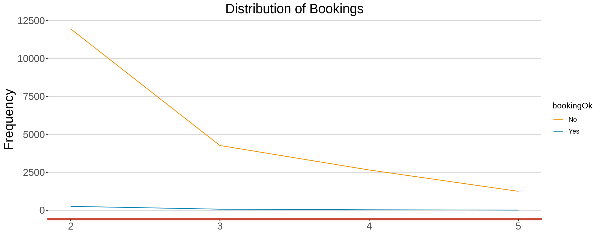
A majority of the website users are based in US, followed by IT.
summ_tab <- visit_caseStudy %>%
distinct(tracking_id, session_id,.keep_all = TRUE) %>%
group_by(locale) %>%
summarise(count = n()) %>%
arrange(desc(count)) %>%
mutate(perc = round((count/sum(count))*100,0))
## Print the table
pr_func(summ_tab,cnames = c("Locale","Frequency","Percentage") )
## Graph
summ_graph <- ggplot(summ_tab %>% filter(count>5000), aes(x=locale,y=count))+
geom_bar(stat = "identity",fill = Company_XXX_yellow)+
geom_text(aes(label =count),vjust = -0.25, size = 5)+
Company_XXX_theme+
labs(title = "Distribution of Users \nby\n Locaion",x="Hour",
y="Frequency")
summ_graph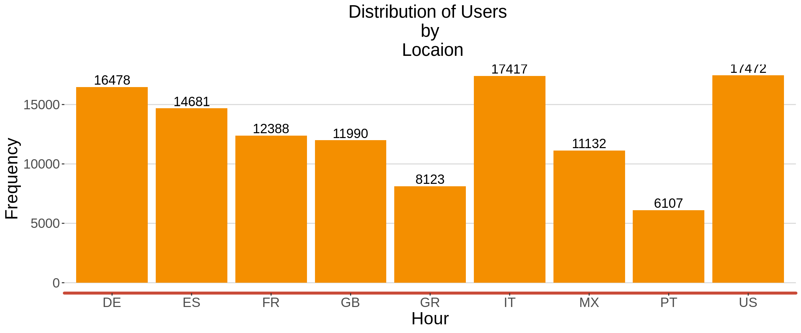
A majority of users visit the website in the afternoon.
summ_tab <- visit_caseStudy %>%
mutate(hour = hour(date)) %>%
distinct(tracking_id, session_id,.keep_all = TRUE) %>%
group_by(hour) %>%
summarise(frequency = length(unique(session_id)))
## Print the table
pr_func(summ_tab,cnames = c("Hour","Frequency") )
## Graph
summ_graph <- ggplot(summ_tab, aes(x=hour,y=frequency,group=1, color=1))+
geom_line(stat = "identity",color = Company_XXX_yellow)+
#geom_text(aes(label =count),vjust = -0.25, size = 5)+
Company_XXX_theme+
labs(title = "Distribution of Website Visits \n by \n Time of Day ",x="Hour",
y="Frequency")
summ_graph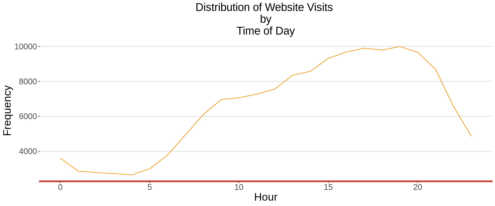
A majority of users tend to make bookings a few days to the actual travel date.
summ_tab <- visit_caseStudy %>%
distinct(tracking_id, session_id,.keep_all = TRUE) %>%
mutate(bookingOk = ifelse(bookingOk==0,"No","Yes")) %>%
group_by(tracking_id) %>%
mutate(frequency = n()) %>%
mutate(diff_days = difftime(travelStartDate, as.Date(date), units="days")) %>%
group_by(diff_days)%>%
summarise(count = n())
## Graph
summ_graph <- ggplot(summ_tab, aes(x=diff_days,y=count,group=1, color=1))+
geom_line(stat = "identity",color = Company_XXX_yellow)+
#geom_text(aes(label =count),vjust = -0.25, size = 5)+
Company_XXX_theme+
labs(title = "Length of time \n beween \n Booking Date and Travel Start Date ",x="Length (days)",y="Frequency")+ylim(c(0,6000))+xlim(c(0,200))
summ_graph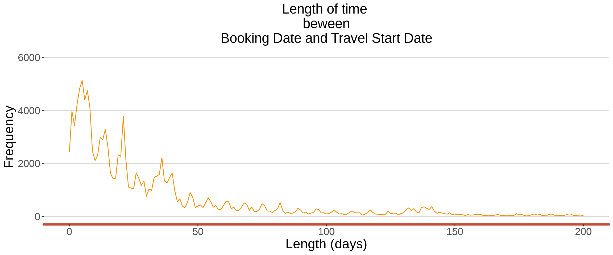
A majority of the website site clicks are on advertisers D7A8, followed by CEFA.
summ_tab <- visit_caseStudy %>%
distinct(tracking_id, session_id,.keep_all = TRUE) %>%
group_by(advertiser) %>%
summarise(count = n())
## Print the table
pr_func(summ_tab,cnames = c("Advertiser","Frequency"))
## Graph
summ_graph <- ggplot(summ_tab %>%filter(count>5000), aes(x=advertiser,y=count))+
geom_bar(stat = "identity",fill = Company_XXX_yellow)+
geom_text(aes(label =count),vjust = -0.25, size = 5)+
Company_XXX_theme+
labs(title = "Distribution of advertisers",x="Advertisers",
y="Frequency")
summ_graph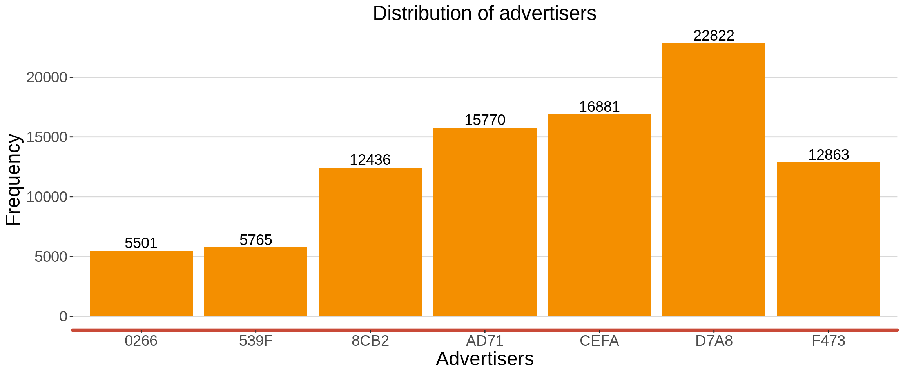
The top 5 advertisers that result into booking errors are 539F, 555D, 5A14,78F7 and 8E82.
summ_tab <- visit_caseStudy %>%
distinct(tracking_id, session_id,.keep_all = TRUE) %>%
group_by(advertiser) %>%
summarise(count = n(),
sum_errors = round(sum(bookingError!=0)/count*1000,1),
sum_oks = round(sum(bookingOk!=0)/count*1000,1))
## Print the table
pr_func(summ_tab,cnames = c("Advertiser","Frequency","Error Rate","Success Rate"))
## Graph
summ_graph <- ggplot(summ_tab %>%filter(sum_errors>5),
aes(x=advertiser,y=sum_errors,group=1))+
geom_line(stat = "identity",color = Company_XXX_yellow)+
geom_text(aes(label =sum_errors),vjust = -0.25, size = 5,color = Company_XXX_blue)+
Company_XXX_theme+
labs(title = "Booking Error Rates",x="Advertisers",
y="Booking error rate (in 000s)")
summ_graph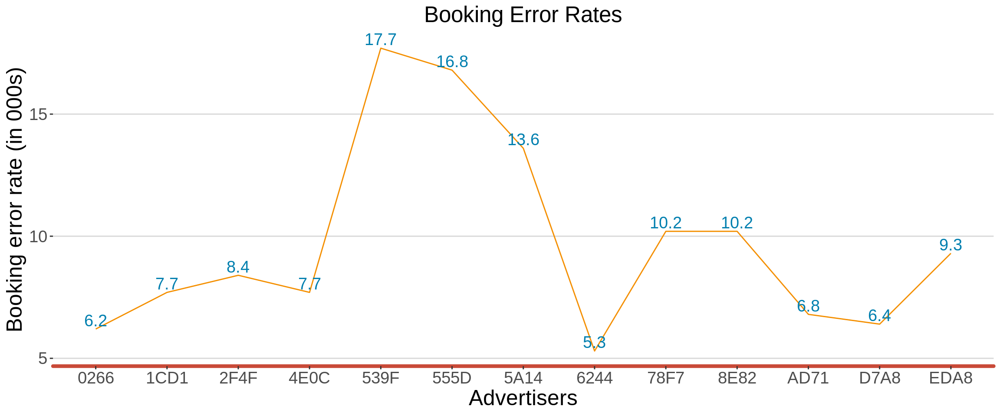
## Graph
summ_graph2 <- ggplot(summ_tab %>%filter(sum_oks>25),
aes(x=advertiser,y=sum_oks,group=1))+
geom_line(stat = "identity",color = Company_XXX_yellow)+
geom_text(aes(label =sum_oks),vjust = -0.25, size = 5,color = Company_XXX_blue)+
Company_XXX_theme+
labs(title = "Booking Success Rates",x="Advertisers",
y="Booking success rate (in 000s)")
summ_graph2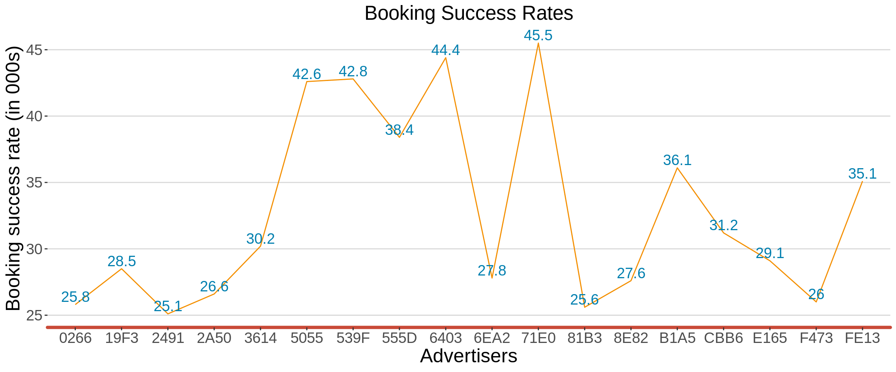
A majority of users will mostly visit the website when their travel date is a few days away from the booking date.
summ_tab <- visit_caseStudy %>%
distinct(tracking_id, session_id,.keep_all = TRUE) %>%
mutate(bookingOk = ifelse(bookingOk==0,"No","Yes")) %>%
group_by(tracking_id) %>%
mutate(frequency = n()) %>%
filter(frequency==1 & bookingOk !="Yes") %>%
mutate(diff_days = difftime(travelStartDate, as.Date(date), units="days")) %>%
group_by(diff_days)%>%
summarise(count = n())
## Graph
summ_graph <- ggplot(summ_tab, aes(x=diff_days,y=count,group=1, color=1))+
geom_line(stat = "identity",color = Company_XXX_yellow)+
#geom_text(aes(label =count),vjust = -0.25, size = 5)+
Company_XXX_theme+
labs(title = "Length of time \n beween \nBooking Date and Travel Start Date ",x="Length (days)",y="Frequency")+ylim(c(0,6000))+xlim(c(0,200))
summ_graph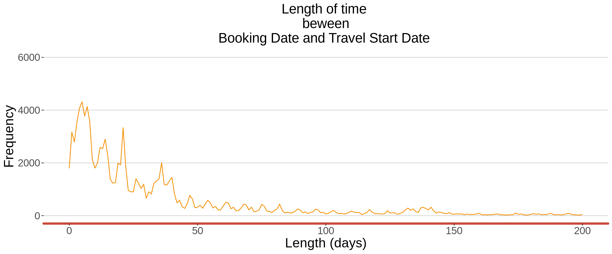
A majority of them revisit the website in an hour’s time.
summ_tab <- visit_caseStudy %>%
distinct(tracking_id, session_id,.keep_all = TRUE) %>%
mutate(bookingOk = ifelse(bookingOk==0,"No","Yes")) %>%
group_by(tracking_id) %>%
mutate(frequency = n()) %>%
filter(frequency >1) %>%
group_by(tracking_id) %>%
arrange(date) %>%
mutate(diff_hours = zoo::na.locf0(round(difftime(lead(date), date, units="hours"),0)))%>%
distinct(tracking_id, diff_hours) %>%
mutate(seq = seq_along(tracking_id)) %>%
filter(seq == 1) %>%
ungroup() %>%
group_by(diff_hours) %>%
summarise(count = n())%>%
mutate(perc = round((count/sum(count))*100,0)) %>%
ungroup() %>% mutate(diff_hours = as.factor(diff_hours))
## Print the table
pr_func(summ_tab,cnames = c("Difference in time (hours)","Frequency","Percentage"))
## Graph
summ_graph <- ggplot(summ_tab %>%filter(perc>3), aes(x=diff_hours,y=perc))+
geom_bar(stat = "identity",fill = Company_XXX_yellow)+
geom_text(aes(label =perc),vjust = -0.25, size = 5)+
Company_XXX_theme+
labs(title = "",x="Difference in time (hours)",
y="Percentage")
summ_graph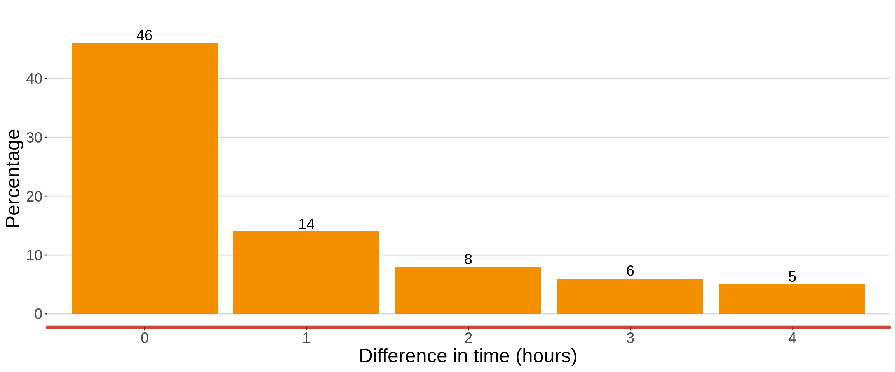
A majority of them revisit the website within the same minute.
summ_tab <- visit_caseStudy %>%
distinct(tracking_id, session_id,.keep_all = TRUE) %>%
mutate(bookingOk = ifelse(bookingOk==0,"No","Yes")) %>%
group_by(tracking_id) %>%
mutate(frequency = n()) %>%
filter(frequency >1) %>%
group_by(tracking_id) %>%
arrange(date) %>%
mutate(diff_hours = zoo::na.locf0(round(difftime(lead(date), date, units="hours"),0)),
diff_mins = zoo::na.locf0(round(difftime(lead(date), date, units="min"),0)))%>%
distinct(tracking_id, diff_hours,diff_mins) %>%
mutate(seq = seq_along(tracking_id)) %>%
filter(seq == 1) %>%
filter(diff_hours == 0) %>%
ungroup() %>%
group_by(diff_mins) %>%
summarise(count = n())%>%
mutate(perc = round((count/sum(count))*100,0)) %>%
ungroup() %>% mutate(diff_mins = as.factor(diff_mins))
## Print the table
pr_func(summ_tab,cnames = c("Difference in time (mins)","Frequency","Percentage"))
## Graph
summ_graph <- ggplot(summ_tab %>%filter(perc>3), aes(x=diff_mins,y=perc))+
geom_bar(stat = "identity",fill = Company_XXX_yellow)+
geom_text(aes(label =perc),vjust = -0.25, size = 5)+
Company_XXX_theme+
labs(title = "",x="Difference in time (mins)",
y="Percentage")
summ_graph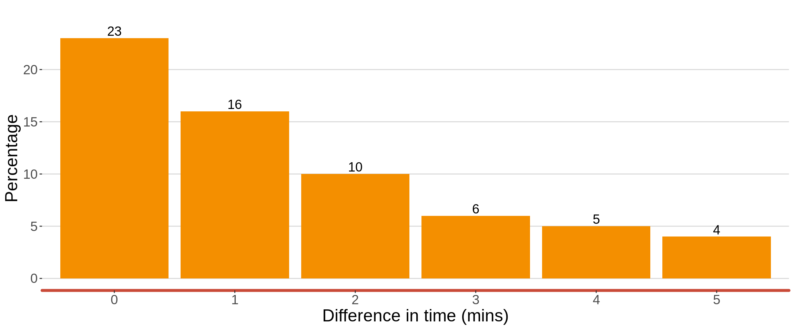
A majority of the users succeed in making a booking after the second trial.
summ_tab <- visit_caseStudy %>%
distinct(tracking_id, session_id,.keep_all = TRUE) %>%
mutate(bookingOk = ifelse(bookingOk==0,"No","Yes")) %>%
group_by(tracking_id) %>%
mutate(frequency = n()) %>%
filter(frequency >1) %>%
group_by(tracking_id) %>%
arrange(date) %>%
distinct(tracking_id, session_id, bookingPriceTotal) %>%
mutate(seq = seq_along(bookingPriceTotal)) %>%
mutate(Trials = ifelse(sum(bookingPriceTotal)==0,0,NA)) %>%
mutate(Trials = ifelse(bookingPriceTotal!=0,seq,Trials)) %>%
arrange(tracking_id) %>%
distinct(tracking_id, Trials) %>%
filter(!is.na(Trials)) %>%
distinct(tracking_id, .keep_all = T) %>% ungroup() %>%
group_by(Trials) %>%
summarise(count = n())%>%
mutate(perc = round((count/sum(count))*100,0))
## Print the table
pr_func(summ_tab,cnames = c("Number of trials","Frequency","Percentage"))
## Graph
summ_graph <- ggplot(summ_tab %>%filter(count<200), aes(x=Trials,y=count))+
geom_bar(stat = "identity",fill = Company_XXX_yellow)+
geom_text(aes(label =count),vjust = -0.25, size = 5)+
Company_XXX_theme+
labs(title = "Number of Trials before Successful Bookings",x="Number of Trials",
y="Frequency")
summ_graph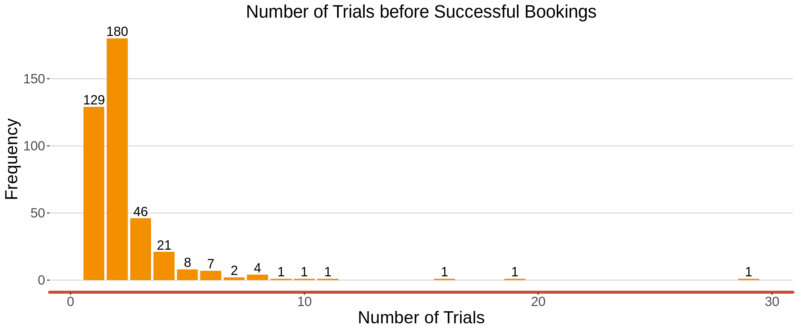
The second part of the challenge involved a dataset showing list of actions, of the users in part 1. Each row in the data corresponds to a logged event
The questions I sought to answer in this task include:
What actions are common? Can we think how this relates to the Company_XXX Express Booking?
What are the most common final actions for a user? Why is that?
How are actions distributed and can we infer anything from that?
What might be the action that we consider as a conversion? Is there a feasible way to verify that?
## Generate a dataset that only contains the page_log_id, tracking_id, session_id and page_id
task2_data <-page_log %>% distinct(page_log_id, tracking_id, session_id, page_id)A majority of the respondents spend most of their time on Page 9020 and Page 9005.
## Calculate the number of page_log ids for each user and each page
summ_tab <- task2_data %>%
group_by(tracking_id, session_id,page_id) %>%
summarise(counter = length(unique(page_log_id))) %>%
group_by(page_id) %>%
summarise(avg_logins = round(mean(counter),1)) %>% ungroup() %>%
mutate(page_id = as.factor(page_id))
## Print the table
pr_func(summ_tab,cnames = c("Page_ID","Average number of Page_log_IDs"))
## Graph
summ_graph <- ggplot(summ_tab, aes(x=page_id,y=avg_logins))+
geom_bar(stat = "identity",fill = Company_XXX_yellow)+
geom_text(aes(label =avg_logins),vjust = -0.25, size = 5)+
Company_XXX_theme+
labs(title = "Average number of Page_log_IDs\n per \n Page ID",x="Page ID",
y="Average")
summ_graph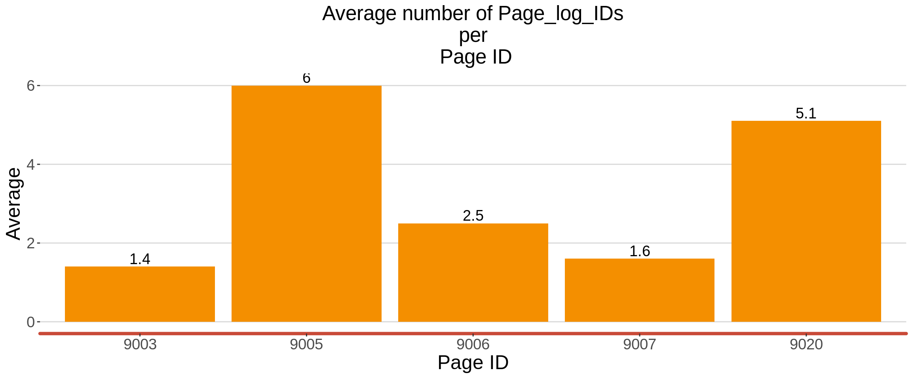
A majority of sessions end on Page ID 9020.
summ_tab <- page_log %>%
group_by(tracking_id, session_id) %>%
arrange(date) %>%
mutate(seq= seq_along(session_id)) %>%
filter(seq == max(seq)) %>%
group_by(page_id) %>%
summarise(count = length(unique(session_id)))%>%
mutate(page_id = as.factor(page_id))%>%
mutate(perc = round((count/sum(count))*100,0))
## Print the table
pr_func(summ_tab,cnames = c("Page_ID","Frequency","Percentage"))
## Graph
summ_graph <- ggplot(summ_tab, aes(x=page_id,y=count))+
geom_bar(stat = "identity",fill = Company_XXX_yellow)+
geom_text(aes(label =count),vjust = -0.25, size = 5)+
Company_XXX_theme+
labs(title = "Number of session ends\n per \n Page ID",x="Page ID",
y="Frequency")
summ_graph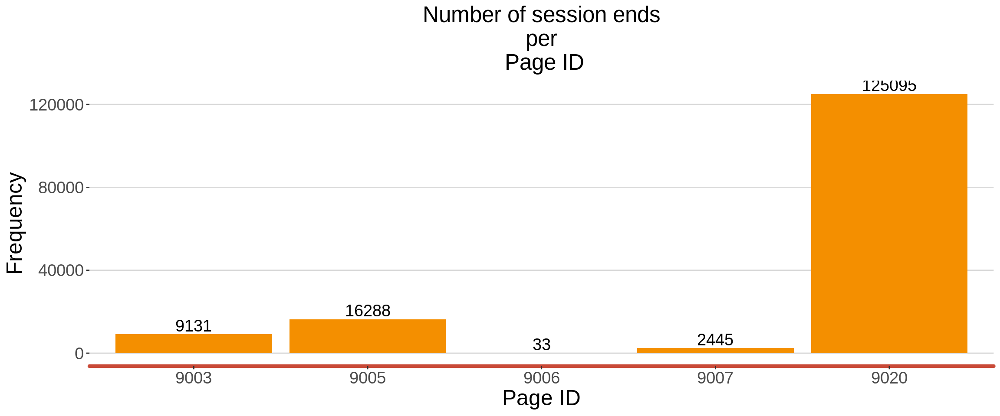
Almost all sessions end at point 993
summ_tab <- page_log %>%
group_by(tracking_id, session_id) %>%
arrange(date) %>%
mutate(seq= seq_along(session_id)) %>%
filter(seq == max(seq)) %>%
group_by(page_id,type) %>%
summarise(count = length(unique(session_id)))%>%
group_by(page_id) %>%
mutate(perc = round((count/sum(count))*100,0)) %>% ungroup() %>%
mutate(page_id = as.factor(page_id))
## Print the table
pr_func(summ_tab,cnames = c("Page_ID","Type", "Frequency","Percentage"))
## Graph
summ_graph <- ggplot(summ_tab%>% filter(type == 993), aes(x=page_id,y=perc))+
geom_bar(stat = "identity",fill = Company_XXX_yellow)+
geom_text(aes(label =perc),vjust = -0.25, size = 5)+
Company_XXX_theme+
labs(title = "Number of session ending with 993\n per \n Page ID",x="Page ID",
y="Percentage")
summ_graph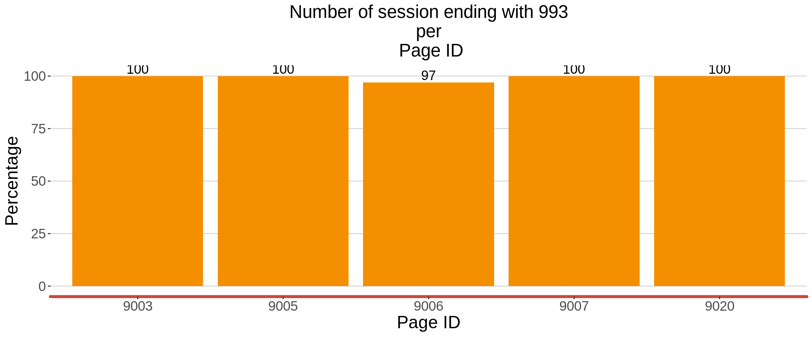